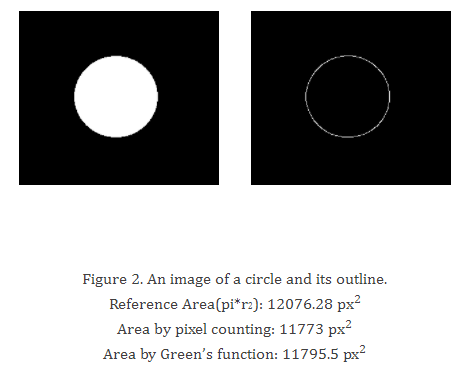
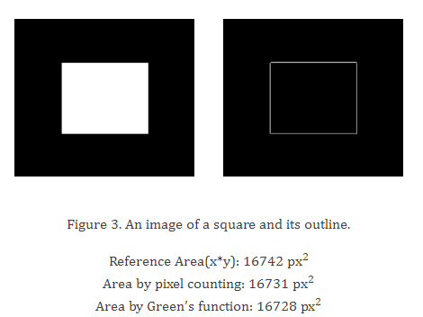
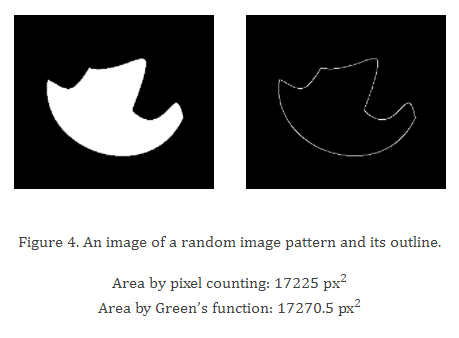
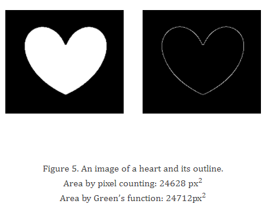
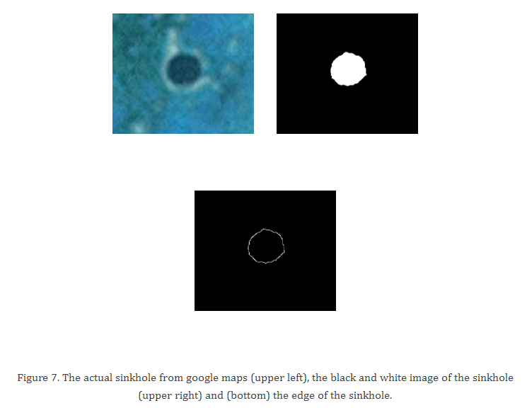

In this blog, we will estimate the area of images with defined edges. The thought really sounds cool for me but trust me, it really needs some effort to pull this one off. We will use two ways in order to estimate the area in the image: (1) by pixel counting and (2) Green's theorem.
First, we find the area of regular geometric images such as a circle and a square. Next, we find the area of irregular shapes such as a heart and an image resembling a “twitter bird”. Lastly, we apply the two techniques to determine the area of a certain place.
For the two techniques, the image must be converted into a binary image first. The area to be computed is the white part of the image, and the rest is black. This is highly important because the algorithm we will be using assumes this.
The first technique counts the number of white pixels in the image to determine the area. In the process of counting the white pixels, I thought that the value of white pixels in the image is 1 but when I read the image, it turns out to be 255. With this, the code snippet I used is:
e = imread('C:\Users\dell\Desktop\AP 186\Act 4\Stuff\bh.bmp');
disp(length(find(e==255)));I just “find” the 255 values in the image using the second line.
That's all for the first technique. Easy isn't it? XD Well, that's only the first part. The Green's function is a lot more tedious.
The second technique uses Green's function which calculates the area using an ‘edge’. I really don't want to dig deep much into the “nosebleed”/mathematical part of the Green's theorem. :p Green's theorem relates a double integral to a line integral (okay, too much jargon. xD). In layman's terms, we use Green's theorem to relate a ‘line’ to an ‘area’. When we have a closed line (the shape doesn't matter as long as it does not ‘loop’), we can calculate the area it encloses using Green's theorem. For our purpose which uses discrete values, the discrete form is more useful.
So, the next step now is to implement it! And this is the part where most of us got stuck. I bet if you check out some of my batchmates' blogs, you'll read many problems. First, there is no follow() function in the newest version of SciLab; you need to install the SciLab Image Processing (SIP) module first. However, there is no working SIP module for Windows users as of now. The choice is to either use a lower version of SciLab or install it in a Linux or Ubuntu operating system. As for me, I did not do any of both. Luckily, my friend Ash found a separate follow() function that is suitable for our version! Yay! Thanks to the blog of Kuya MP, we have solved our “follow” problem.
First, I used the edge function to get the border of the shape I will be using. Next I execute the follow() function script. And then, I get the x and y values of the pixels of the outline (from the edge function) using the follow function. This gives me a clockwise “sweep” of the outline's pixels. Note that this is important in using Green's function. The third to the last line of the code “closes” the contour of the integral. And now, after hours of contemplation, we test the code. First, we test it on geometric shapes: (1) circle and (2) square.


From the two geometric shapes, it is seen that an error of 0.01 to 2% is calculated. Next we apply the code to non-geometric images. The non-geometric shapes' area from the pixel counting and Green's function deviate from each other by 0.2% and 0.3%. For the last part of the experiment, I used an image of an underwater sinkhole (Belize) and calculated its area.



Figure 6. An underwater sinkhole. Image from National Geographic Website.

I have calculated the area in four ways:
- From literature value, I found that the sinkhole stretches about 300 meters across (belize.com/belize-blue-hole). From geometry, I calculated the area to be: 70,685.835 m².
- From the image itself (actual sinkhole), I measured the diameter to be 68 pixels. This translates to an area of about 3,631 px². Now, converting it to meters, I used the markings on the map. From inspection, I have seen that 500 meters in the map corresponds to 111 pixels. This means that there are 4.5 meters in 1 pixel or 20.3 square meters in 1 square pixel. Multiplying 20.3 by 3,631 px², the area calculated using this method is 73,688.846 m².
- Using pixel counting, the value of the area is found to be 73,999.675 m² (this is after multiplying the scaling factor to 3,647 px²).
- Using Green's function I calculated it to be 74,293.888 m².
The values are really not much away from each other considering the nature of the method. The largest is about 5%.
Warning! For those who will try this out, be careful in using the edge function. Sometimes, it gives out an outline with some discrepancies or holes in it. This gives out wrong area values (sometimes it even gives out zero or negative numbers!).
← All Image Processing articles